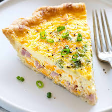

Quiche

Description
A Quiche usually has a pastry crust and a filling of eggs and milk and/or cream. It may be made with vegetables, meat and seafood, and be served hot, warm or cold.
Types of quiches include:
- Quiche au Camembert: Camembert cheese, cream, eggs
- Quiche aux champignons: Mushrooms, cream, eggs
- Quiche aux endives: Chicory, cream, eggs, cheese
- Quiche aux épinards: Spinach, cream, eggs
- Quiche au fromage de Gruyère: Gruyère cheese, cream, eggs, bacon
- Quiche aux fromage blanc: Cream cheese, cream, eggs, bacon
- Quiche aux fruits de mer: Shrimp, crab or lobster, cream, eggs
- Quiche aux oignons: Onions, cream, eggs, cheese
- Quiche aux poireaux: Leeks, cream, eggs, cheese
- Quiche au Roquefort: Roquefort cheese, cream, eggs
- Quiche comtoise: Comté cheese cheese, cream, eggs, smoked bacon
- Quiche lorraine: Cream, eggs, bacon
- Quiche niçoise, à la tomate: Anchovies, olives, tomatoes, eggs, Parmesan cheese
Recipe
- 1 1/2 cups of shredded Swiss cheese
- 4 teaspoons all-purpose flour
- 1 (9 inch) unbaked pie crust, frozen
- 1/2 cup cooked ham, diced
- 3 large eggs
- 1 cup milk
- 1/4 teaspoon salt
- 1/4 teaspoon ground dry mustard
- 2 tablespoons chopped fresh parsley
- 2 tablespoons chopped pimento peppers
Steps
- Preheat the oven to 400 degrees F (200 degrees C.)
- Toss shredded cheese and flour together in a medium bowl. Sprinkle mixture onto frozen pie crust. Add diced ham on top of cheese.
- Combine eggs, milk, salt, and dry mustard in a medium bowl. Beat until smooth and pour over cheese and ham.
- Place foil around the edges of the crust to protect it from burning.
- Bake in the preheated oven until the filling is set and the crust is golden brown, about 1 hour. A knife inserted into the center of the quiche should come out clean.
- Garnish with parsley and pimento peppers before serving.